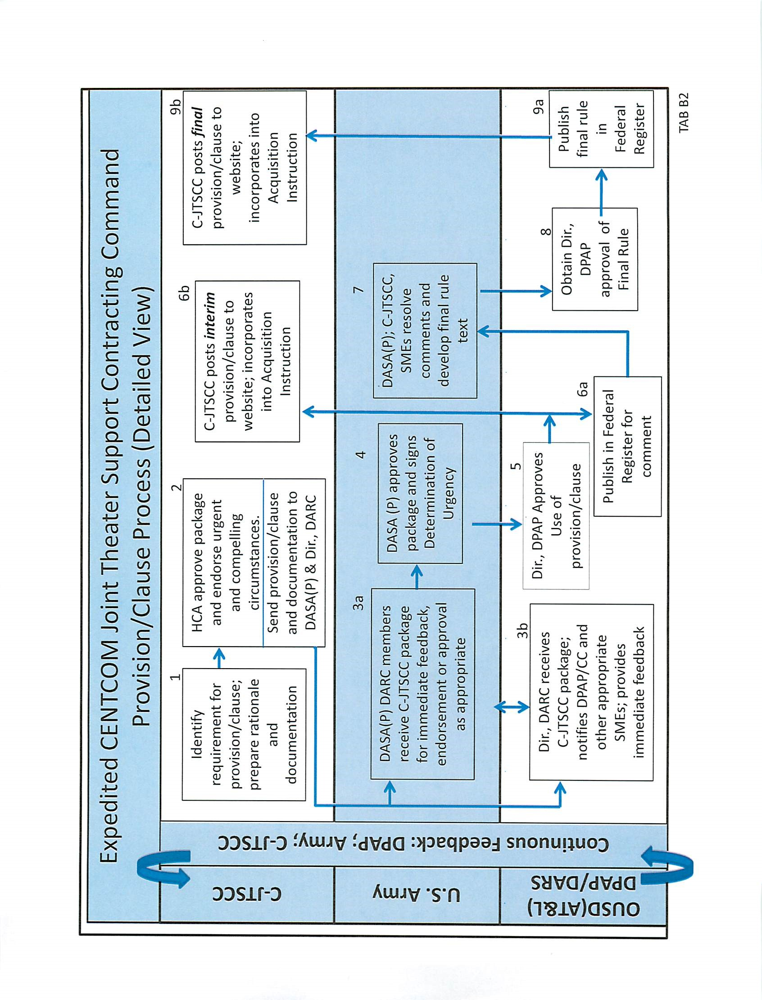

APPENDIX - FF Table Of Contents
DEPARTMENT OF THE ARMY PLAN FOR CONTROL OF NONSTANDARD CLAUSES
September 3, 2014
1. PURPOSE. The purpose of this plan is to implement, maintain, and comply with a plan for controlling the use of clauses other than those prescribed in the Federal Acquisition Regulation (FAR) and the Defense Federal Acquisition Regulation Supplement (DFARS) as required in DFARS 201.304(4). This plan supersedes the July 31, 2009, update.
2. DEFINITIONS.
a. Clause – The term “clause” includes solicitation provisions and means a term or condition of the type set forth in FAR part 52 and DFARS part 252.
b. Deviation – The term “deviation” includes any clause that is inconsistent with the FAR or DFARS.
c. Regulation – The term “regulation” includes any contracting supplement, policy letter, clause book, automated system, acquisition instruction (AI), or similar regulatory instrument.
3. REVIEW AND APPROVAL OF NONSTANDARD CLAUSES. Army contracting activities coordinate all nonstandard clauses with the Office of the Deputy Assistant Secretary of the Army (Procurement) (ODASA(P)) Policy and Programs Directorate in accordance with Army Federal Acquisition Regulation Supplement (AFARS) 5101.304(1)(i). The ODASA(P) Policy and Programs Directorate coordinates with the Office of the Army General Counsel during review of nonstandard clauses.
a. Director of Defense Procurement and Acquisition Policy (DPAP) Clause Approval –
(1) Obtain DPAP approval to use clauses that have a significant effect beyond the internal operating procedures of the Army or impose a significant cost or administrative impact on contractors or offerors (DFARS 201.304(1)). Included are class deviations from the FAR or DFARS (DFARS 201.404(b)) and the six categories of individual deviations set forth in DFARS 201.402(1).
(2) Coordinate with the ODASA(P) Policy and Programs Directorate to publish clauses requiring DPAP approval in the Federal Register, conduct analysis to ensure compliance with the Paperwork Reduction Act and the Regulatory Flexibility Act (FAR 1.301(c)), and analyze public comments. Submit the clause and all analysis through the Defense Acquisition Regulations (DAR) Council Director (DFARS 201.304(5) and AFARS 5101.301(b)).
b. Other than DPAP Clause Approval –
(1) Obtain Deputy Assistant Secretary of the Army (Procurement) (DASA(P)) approval to use clauses that do not require DPAP approval and do not require publication in the Federal Register for public comment, but are included in contracting activity AIs or clause books.
1


